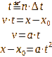

|
|
Revisión Principia→ La apuesta por Sir Isaac Newton.
La función de iterador I es aquella que aplicada a la expresión sumatoria del producto, devuelve el valor máximo de las iteraciones requeridas, el iterador.
El producto o multiplicación natural, la expresión de una relación proporcional lineal, es el resultado de sumar tantas veces como indica el iterador al otro factor que denominaremos sumado. Al ser en último lugar una suma, a todos los sumandos hay que suponerles idénticas o equivalentes unidades y pueden ser las de cualquiera de los dos factores debido a la propiedad conmutativa de dicha operación, que permite seleccionarlos como iterador o sumado.
Magnitud es la expresión numérica de una propiedad de un objeto natural, observable y medible, que se expresa por un iterador indicando el número de veces que contiene a la unidad considerada y que incluye a esta como sumado. En ese contexto y solo en ese es cuando se pueden considerar unidades derivadas por operaciones numéricas entre ellas. La más inmediata, la separación de operaciones entre iteradores y esas unidades que actúan de sumados.
La intuición del ángulo recto, indica que existe una construcción angular y solo una que cumple el teorema de Pitágoras. Es incluso visualmente característica e implica una ausencia de proyecciones entre ejes que forman ese ángulo. Ha sido extendidamente experimentado y es siempre posible esa construcción. Se utilizará para obtener el sistema de referencia.
La intuición de ritmo consiste en afirmar la capacidad del cerebro de considerar ciclos de carácter repetitivo de igual periodo, con mayor o menor precisión. La consideramos una afirmación fruto de interpretación de la evidencia y la sostenemos como principio.
CORRECCIÓN IMPORTANTE.
La división aritmética.
En esta apuesta que se realiza, se hace un esfuerzo en evitar la operación de división y es intencionado desde el principio. No solo se trata de álgebra sino de álgebra analítica de lo natural. Si se quiere imponer una tendencia hiperbólica en el análisis sería cuando se incluiría la división ya que lo hace y siempre lo hace, especialmente al tratarse de enteros base cero. Y como en ningún momento hay intención de ello sino la manifestación de leyes lineales, las evitamos con toda intención. También necesitamos unidades constantes que no sean alteradas por relaciones entre una misma magnitud que puedan utilizar finalmente esa operación de división. No deseamos en ningún caso funciones analíticas hiperbólicas forzadas si no lo indica así la Naturaleza.
La división, para cuando hay que repartir algo. Y que lo haya, por favor.
Editado el 07/10/2024 tras una indigestión de tanto por cien (a revisar).
El instante se define como el evento en que un futuro se convierte en presente y a la vez, ese presente anterior cambia a pasado e implica memoria. Ocurre ante la consecución de una nueva lectura del resultado de una función del tiempo, ante una nueva observación. Su medición es simplemente el conteo y se considerarán como números naturales de base uno. Se supone derivado de la intuición de ritmo. Al presente le llamaremos instante actual.
El tiempo mensurable t se forma con el intervalo entre instantes sucesivos, el cual se considera constante e igual en cada repetición atendiendo a la intuición de ritmo. Resulta de la multiplicación del número de instantes ocurridos por ese valor de repetición considerado. Este valor de repetición se relaciona, entre otras posibilidades, con movimientos espaciales cuyo inicio y final coinciden y hay evidencia suficiente de ello. Se puede derivar por tanto de la apreciación de espacio.
La apuesta por Sir Isaac Newton se define como el debido respeto al papel fundamental de la aceleración. Puede haber controversia al menos aparente entre esa afirmación y la posibilidad de velocidad constante que indefectiblemente niega magnitudes derivadas ante ese valor cero de variación de la velocidad.

Ec.1 Definición de tiempo, velocidad y aceleración (x→espacio, t→tiempo)
|
|
Fig.1 Espacio y aceleración en sistema cartesiano con eje de abscisas geométrico (potencia dos).
La aceleración de valor uno es la conocida en la superficie de la tierra.
De la ecuación [1] de la figura 1 se observa que ante el planteamiento sostenido y para un Δt de la unidad, se afirma que la expresión de sumatorio es equivalente al cuadrado del número de instantes considerados n, siendo el sumatorio en su entendimiento numérico la expresión de la suma de todos los números impares anteriores al valor de 2n, lo cual es demostrable.
Primera Ley de la Dinámica (Newton). Fuerza y Energía
La fuerza o esfuerzo natural es proporcional linealmente a la aceleración o variación de la velocidad del móvil y a la cantidad de masa que presenta. (Experimentado por Galileo Galilei), no así a la velocidad que se pueda medir, de la cual se deriva el impulso. Sus unidades son las de la aceleración o las de la masa, según se tomen como iterador o sumado.
|
Ec.2 Definición de energía.
Definimos la energía en este ámbito como el resultado de la multiplicación de masa y espacio, dos magnitudes medibles y observables, que como vemos se igualan a la expresión de fuerza y tiempo de esa manera.
Y con todo esto es posible construir un gráfico como aparece en la figura 2 que interrelaciona todos estas magnitudes. En concreto es válido partiendo de una aceleración y una masa de valor unidad. Cualquiera otros valores producen un resultado como se aprecia en la superposición en color rojo.
|
Fig.2 Composición de las distintas magnitudes consideradas para una aceleración y una masa de valor unidad. En rojo, un supuesto con otros valores de masa y aceleración.
Conservación de la energía.

La media aritmética de ambas expresiones de energía se considera constante en cumplimiento de un principio de conservación. Es posible sin embargo obtenerlo con distintos valores de esas expresiones siempre que se cumpla lo anterior.
Se deduce por tanto que se puede explicar el movimiento acelerado como la transformación de energía en sus expresiones de fuerza y tiempo en espacio y masa, o viceversa. Cada una de las expresiones se convierte en la inversa lineal de la otra, a diferencia del resultado de utilizar la división aritmética que condena a un resultado hiperbólico a efectos de álgebra analítica.
El espacio de las dimensiones
Todo lo expresado sería válido para un universo adimensional, en el sentido de que el conocimiento de unas posiciones de un móvil no es posible porque no está definido el movimiento en su verdadera forma espacial. Se considera además la sola aceleración que pueda haber en la dirección y sentido del movimiento. Y lo que observamos es un universo que al menos tenemos que expresar en tres dimensiones. Por reducción y suponiendo su posible posterior ampliación, consideraremos ahora el espacio bidimensional en adelante.
|
Fig.3 Composición en dos dimensiones x e y del espacio adimensional. Expresión de distancia d desde el origen en el espacio X-Y generado y calculada según el teorema de Pitágoras.
En la Figura 3 se observa una composición de los espacios X-Y y el tiempo, y a la derecha, la proyección en esas dos dimensiones. Hay que remarcar que cualquier otra trayectoria distinta a la bisectriz del cuadrante implica una variación de aceleración respecto a la unidad al menos en uno de los espacios compuestos. En otras palabras, existe solo una trayectoria posible a aceleración unidad en ambos espacios y solo una, que se corresponde con esa bisectriz.
Atracción. El resto del universo.
Y una de las principales fuentes de esa aceleración proviene de observar un comportamiento a la materia que ha de explicarse por características de fronteras generadas. En el caso del estado sólido es más intuitivo y se convierte en lo que podemos definir como una composición interna complicada o menos complicada, pero que hemos de suponer que con una estabilidad en las propiedades de sus constituyentes varios suficiente. Fuera de ese territorio interior se presenta lo que llamaremos el Resto del Universo. Y dicha observación indica una atracción y solo eso entre los elementos que comparten dichas fronteras.
El Resto del Universo que identificaremos por Σm , es el efecto combinado de eso, todas las demás masas que no son incluíbles en el interior de esa frontera observable. Según Sir Isaac, participa también la distancia en su forma cuadrática. Nosotros la consideramos ya así en su expresión no cuadrática y en eso nos derivamos.
Por tanto, basado y solo basado en eso, afirmamos que con la existencia de masa, existe una aceleración impuesta por la del Resto del Universo siempre suponiendo una atracción y que se puede expresar como,

Ec.3 Definición de aceleración gravitacional
Dada la inmensa magnitud espacial que puede suponerse a ese universo y a esa penalización cuadrática por distancia, podemos suponer a priori encontrar valores muy aproximadamente constantes en zonas que sean comparativamente muy menores en tamaño. Además, también es posible suponer una situación aproximada de ese resto del universo en las inmediaciones de lo que más efecto gravitatorio ejerza en sus cercanías. De esta manera se explicaría la importancia posicional del Sol respecto a sus planetas, por ejemplo.

Ec.4 Definición de fuerza gravitatoria.
Efectos de la transformación de la energía en sus formas características.
De la definición de energía realizada hemos obtenido que

y a cada uno de los sumandos les denominaremos expresiones características de la energía (hasta el momento dos). Uno de los efectos conocidos explicable sería el movimiento por reacción. En el combustible utilizado en un motor a reacción estaría acumulada una cantidad igual o mayor a esa expresión de energía de fuerza requerida, posiblemente fruto de largo tiempo de presiones, temperaturas y condiciones que así pudieron procurarlo. En el motor y por medio de combustión o explosión, se desata en forma de masa de gas acelerado y altamente energética, y su efecto sobre el Resto del Universo produce una reacción igual en magnitud con expresión otra vez de fuerza pero de reacción. Es ni más ni menos que todo el resto del universo en oposición. Si no hay otra mayor al posible desplazamiento, finalmente el móvil empieza a moverse cumpliendo la primera ley de la dinámica. Ante la posible ausencia final de esa fuerza de reacción, una vez transformada en la de movimiento, se obtendría una velocidad con tendencia a la constancia si descontáramos efectos de fricción y otros que dependen ahora solo de las características de las inmediaciones, especialmente el aire y peso si se trata de un avión.
Y junto a ese efecto sería intuible al menos el del efecto de cambio de fase, que en algún sentido puede suponerse debido a un efecto similar. Esa energía debe haber existido ya antes para el cumplimiento de la conservación y justifica esos intentos de explicación por medio de lo que se ha denominado efectos latentes.

Desarrollo para incluir la Ley de Coulomb (???)